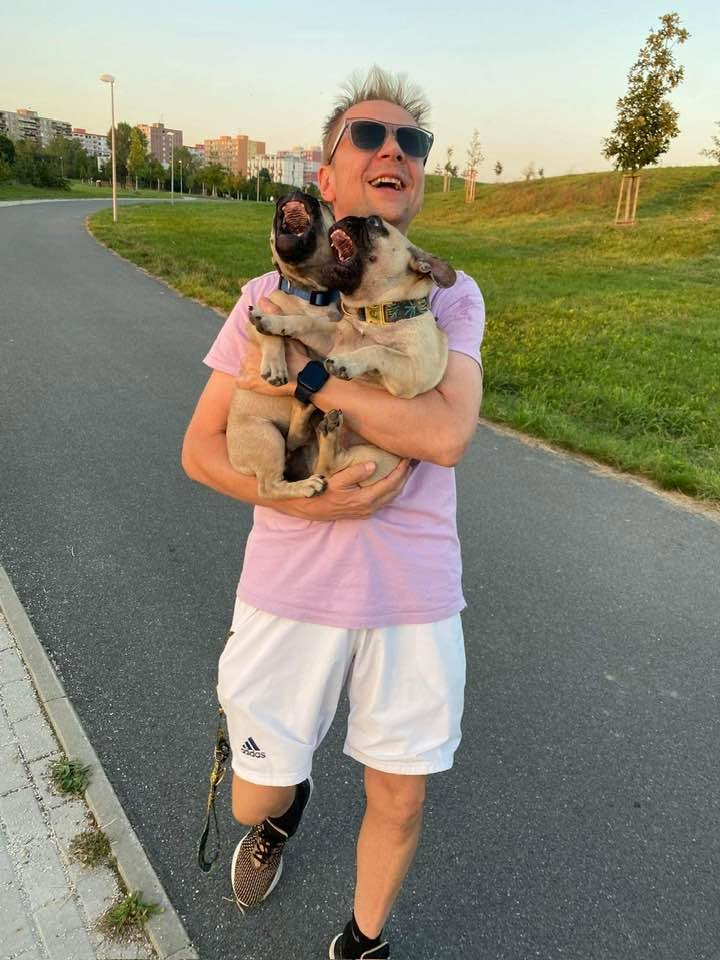
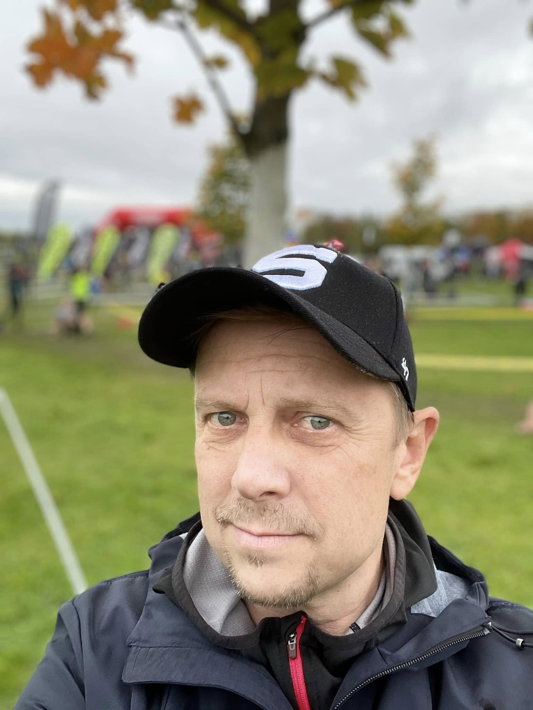

Proč právě Tomáš Frydrýšek
Realitní makléř a průvodce nemovitostmi. Osobní přístup, dlouholeté zkušenosti a znalost Prahy a okolí.

20 let zkušeností. Jeden cíl: prodat vaši nemovitost za co nejvíc.
Trh znám, vím, jak se na něm pohybovat a jak hledat cestu k nejlepší možné prodejní ceně. Každé nemovitosti věnuji individuální strategii a při vyjednávání hájím především váš zájem.
Jmenuji se Tomáš Frydrýšek. Za tu dobu jsem zrealizoval víc než 700 obchodů a pomohl víc než 1 000 klientů s jejich bytovou situací.
Mým krédem je osobní přístup. A k tomu patří i to, že reality beru lidsky - včetně svého francouzského buldočka Bruna. Občas ho beru i na prohlídky. Někomu to udělá den, někomu uvolní atmosféru. Mně to připomíná, že práce má dávat smysl i mimo tabulky.
{kind=link}
{kind=link}
{kind=link}
{kind=link}
{kind=link}
Bruno – fotbalový pes
Bruno je francouzský buldoček s velkou energií, láskou k dětem a mimořádným vztahem k fotbalu. Míč ho baví natolik, že s ním kličkuje skoro jako malý čtyřnohý Messi.
Není to jen parťák na procházky. Je to fotbalový pes a dětský kamarád, který dokáže vykouzlit úsměv dětem i dospělým — na prohlídkách, na hřišti i jen tak mezi lidmi.

Jsem hrdý sparťan
Sparta k tomu patří. Chodím na zápasy, sleduju klub a barvy nosím rád. Není to marketing. Je to prostě součást toho, kým jsem.
Pokud jste sparťan taky, budeme si rozumět. A když fandíte jinam, nevadí - o nemovitosti se stejně dohodneme.
{kind=link}
{kind=link}
{kind=link}
Když nejsem u nemovitosti, jsem na kurtu
Tenis hraju dlouho. Je to můj odpočinek a zároveň způsob, jak se udržet ve hře - doslova. Na kurtu platí podobné věci jako v realitách: soustředění, trpělivost a slušné chování k soupeři.
Když se potkáme a tenis je i vaše téma, rád si o tom popovídám. Někdy je to lepší začátek schůzky než hned cena a dispozice.
20 let zkušeností očima mých klientů
Jak probíhá spolupráce
Čtyři jasné kroky od prvního setkání až po úspěšný prodej.
První schůzka
Setkáme se u vás nebo na dálku. Prohlédneme nemovitost, porovnáme ji s trhem a řekneme si reálný postup.
Strategie prodeje
Navrhneme, jak nemovitost připravit, komu ji ukazovat a jak o ní komunikovat. Jednoduše a srozumitelně.
Marketing a prezentace
Fotografie, videoprohlídka, inzerce a organizace prohlídek. Vaše nemovitost má být vidět u lidí, kteří ji skutečně hledají.
Dohoda a předání
Pomohu s vyjednáváním podmínek, právním servisem a předáním. Cílem je klidný a přehledný závěr, ne jen podpis.
Pojďme probrat váš prodej
Ozvěte se. Domluvíme si termín a projdeme, co dává u vaší nemovitosti smysl.